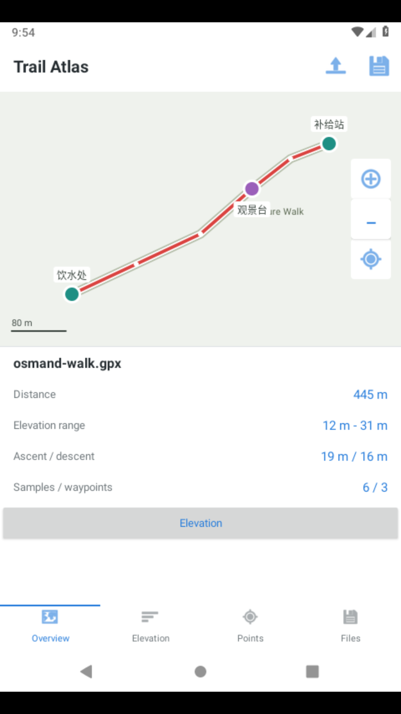
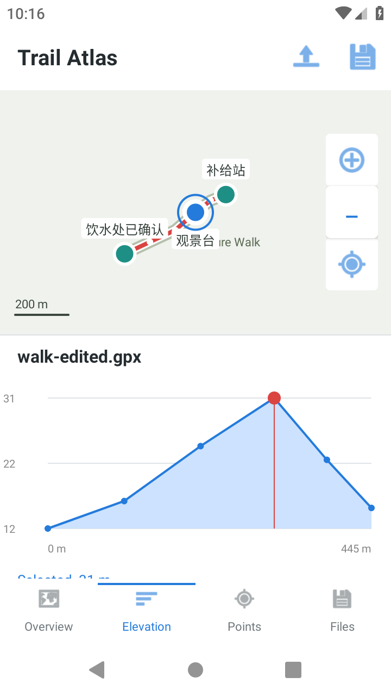
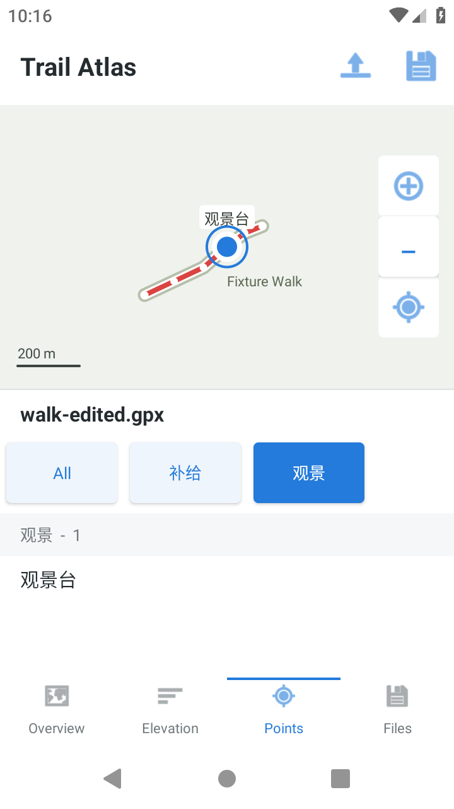
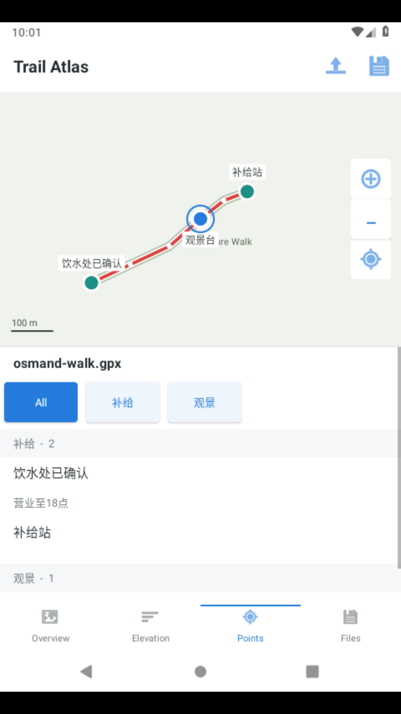
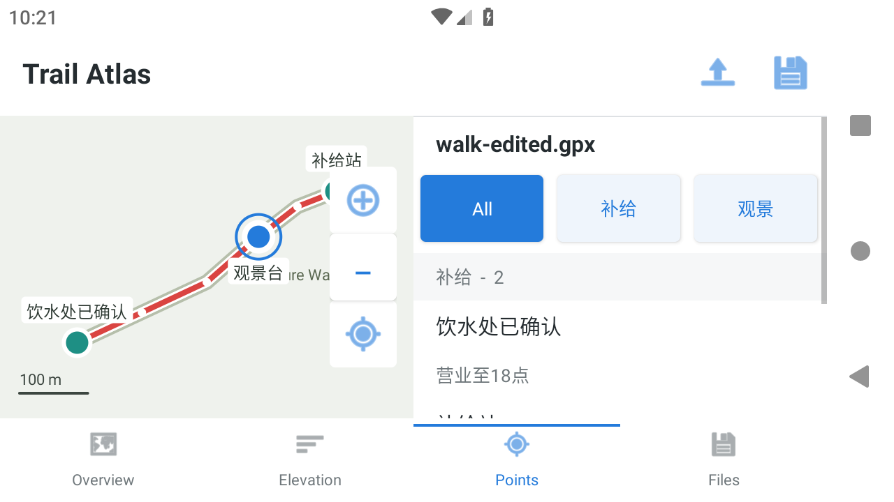
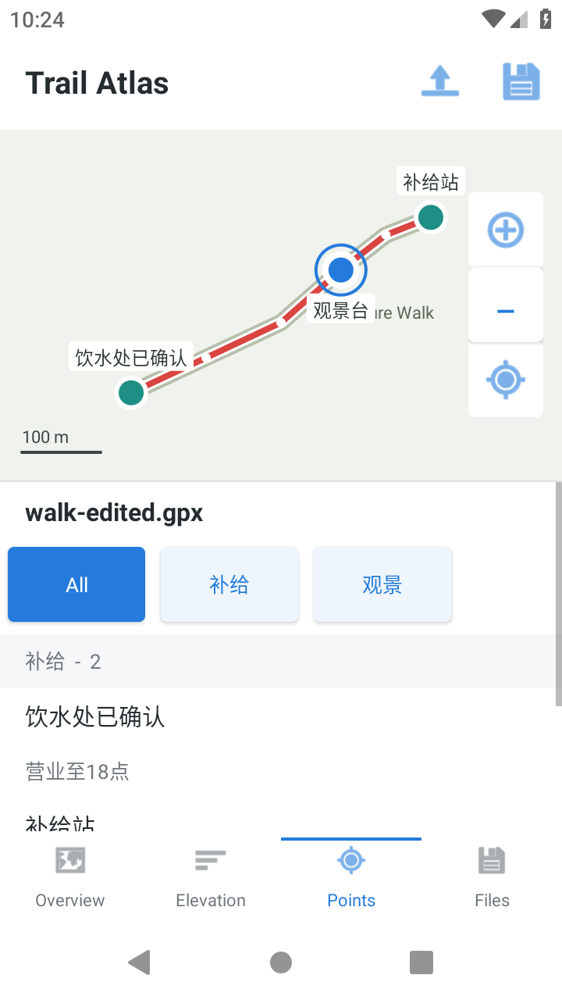
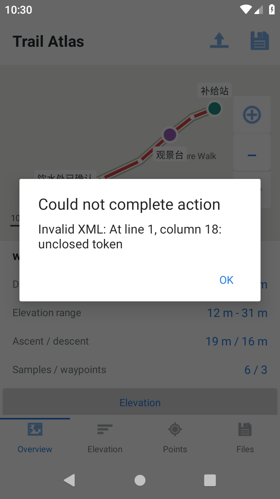
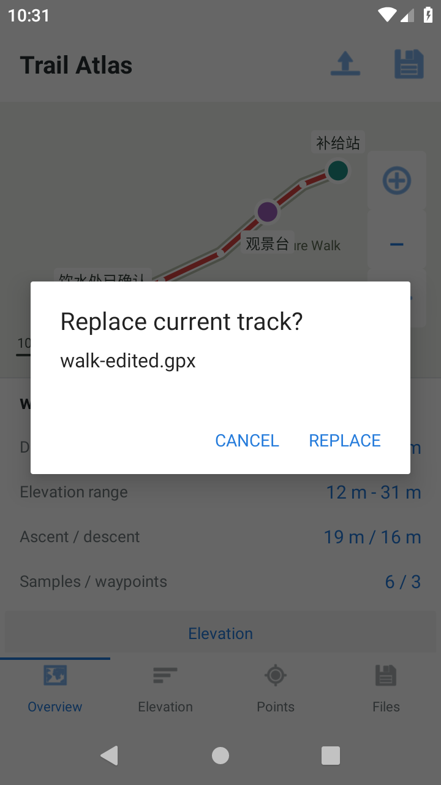

OsmAnd
离线轨迹、海拔联动、航点编辑与 GPX 往返 · MCP-008
35 / 35必需验收项通过
0 次人工候选代码修复
Android 9API 28 实际运行
按公开题面重建的候选 Trail Atlas，并非官方 OsmAnd。验收覆盖本题限定合同；执行器修复与设备批次不计作候选代码修复。高保真与长程难度仍未建立结论。
已验证结果
系统选择器导入六点三航点；海拔按累计距离排列并联动选点；分组筛选、编辑保存和取消；真实旋转及地图平移、缩放、居中。
实际 GPX 导出后清数据重导入，再导出的坐标、海拔和航点文本完整保持，两份导出逐字节相同。坏 XML 明确报错并保留轨迹，重复导入提示替换或取消。
实际运行截图
















逐项验收
35 项必需检查 · 全部通过
| 编号 | 验收条件 | 结果 |
|---|---|---|
| R1-01 | 从系统文件选择器导入GPX，地图展示轨迹与3个航点 | 通过 |
| R1-02 | 概览展示文件名、距离、海拔范围，禁止只显示静态截图 | 通过 |
| R2-01 | 海拔图沿轨迹距离排列 | 通过 |
| R2-02 | 选择图中采样点时地图定位该坐标，切换回概览后保持选点 | 通过 |
| R3-01 | 航点按补给/观景分组筛选，列表与地图同时变化 | 通过 |
| R3-02 | 切换全部恢复3点 | 通过 |
| R3-03 | 编辑补给点名称与描述，返回地图仍显示新名称 | 通过 |
| R4-01 | 导出GPX后再次导入，坐标、海拔、航点名称描述保持 | 通过 |
| R4-02 | 坏XML导入失败，已有轨迹和选点保持不变 | 通过 |
| R5-01 | 地图支持平移缩放，重新居中能够显示完整轨迹 | 通过 |
| R5-02 | 离线底图由本地OSM数据渲染，不接入真实定位、路由或在线瓦片 | 通过 |
| T01-02 | 初始状态：尚未导入轨迹；本地底图可用。 | 通过 |
| T01-04 | 操作：打开walk.gpx，查看地图和概览。 | 通过 |
| T01-06 | 中间状态：一条6采样点轨迹、3个命名航点。 | 通过 |
| T01-08 | 最终状态：海拔范围12至31米，地图边界包含所有点。 | 通过 |
| T01-10 | 恢复/异常：取消文件选择器保持空态，不出现伪轨迹。 | 通过 |
| T01-14 | 待采集证据：操作前、关键中间态、最终态截图；非视觉语义补导出文件/数据摘要。不能用官方截图冒充实测。 | 通过 |
| T02-02 | 初始状态：walk已导入。 | 通过 |
| T02-04 | 操作：打开海拔图，选最高31米点，切换概览再返回。 | 通过 |
| T02-06 | 中间状态：地图标记31.2314,121.4768。 | 通过 |
| T02-08 | 最终状态：图表和地图选点一致，选点未丢。 | 通过 |
| T02-10 | 恢复/异常：点击图表空白不跳到无效坐标。 | 通过 |
| T02-14 | 待采集证据：操作前、关键中间态、最终态截图；非视觉语义补导出文件/数据摘要。不能用官方截图冒充实测。 | 通过 |
| T03-02 | 初始状态：全部3个航点可见。 | 通过 |
| T03-04 | 操作：筛选补给，打开饮水处，改名为饮水处已确认并填营业至18点；返回全部。 | 通过 |
| T03-06 | 中间状态：补给组2点、观景组1点；编辑只改目标。 | 通过 |
| T03-08 | 最终状态：全部3点，新名称和描述一致。 | 通过 |
| T03-10 | 恢复/异常：编辑后取消不写回；旋转设备后已保存数据不丢。 | 通过 |
| T03-14 | 待采集证据：操作前、关键中间态、最终态截图；非视觉语义补导出文件/数据摘要。不能用官方截图冒充实测。 | 通过 |
| T04-02 | 初始状态：已完成航点编辑。 | 通过 |
| T04-04 | 操作：导出walk-edited.gpx；新会话导入；再尝试broken.gpx。 | 通过 |
| T04-06 | 中间状态：正确文件恢复6个轨迹点、3航点与新文本。 | 通过 |
| T04-08 | 最终状态：坏文件报错且当前轨迹不被清空。 | 通过 |
| T04-10 | 恢复/异常：重新选择正确文件可成功，重复导入需明确替换或另存而不默默叠加。 | 通过 |
| T04-14 | 待采集证据：操作前、关键中间态、最终态截图；非视觉语义补导出文件/数据摘要。不能用官方截图冒充实测。 | 通过 |
全部原条款保留。4 条视觉参考说明另列，4 条实测证据要求仍计入必需项；2 条局部观察不另计分。
证据文件
ACCEPTANCE.jsonACCEPTANCE-RECEIPT.jsonacceptance-evidence-check.jsonedited-export-check.jsonafter-broken-export-check.jsonchart-distance-check.jsonscreenshot-sources.jsonroundtrip.gpx
受验 APK SHA256：19efda8869021b6ebcfb598e7c96494131e2cdcd005a7ef8e671589332565106